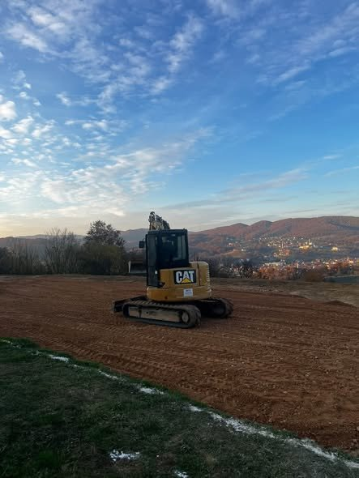
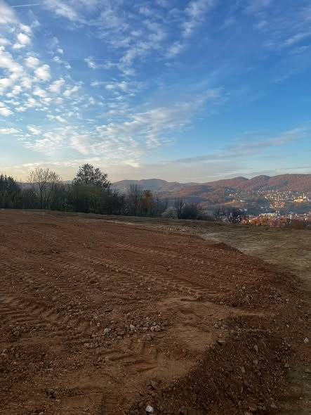
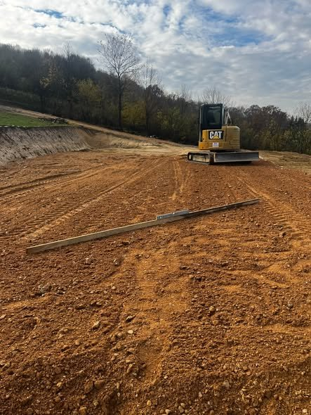
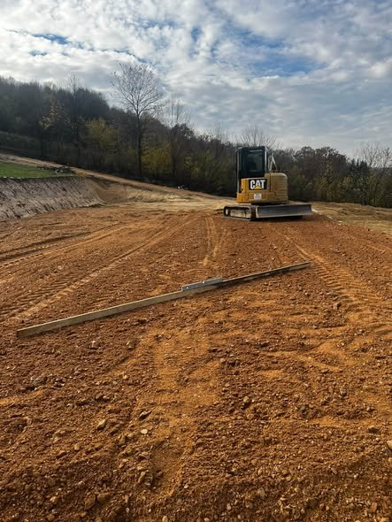

Obrt Trakop · Visoko
Kopamo temelje, kanale za vodu, struju i kanalizaciju, drenažu i pripremamo teren u dvorištu. Mali bager prođe kroz kapiju i radi i tamo gdje veliki ne može prići.
Ako niste sigurni da li možemo odraditi vaš posao, nazovite i pitajte.
Za kuće, vikendice, garaže, ograde i pomoćne objekte. Kopamo po mjerama iz projekta ili kako se dogovorimo s vašim majstorom.
Kopamo kanale za priključke od ulice do kuće, kao i za cijevi i kablove po dvorištu.
Kanali za drenažu oko kuće i temelja, da voda ne ide u zidove i podrum.
Ravnanje terena, skidanje zemlje i priprema podloge za beton, kocku ili travu.
Za većinu poslova oko kuće veliki bager je prevelik. Ne može proći kroz kapiju, a gusjenicama uništi travnjak i staze. Mini bager je uzak i lagan, pa se s njim može raditi uz samu kuću, između objekata i u već uređenom dvorištu.
Recite nam šta treba kopati i gdje. Ako možete, pošaljite sliku terena porukom.
Za veće poslove dođemo pogledati teren prije nego što se dogovorimo.
Dođemo u dogovoreni termin i završimo posao.




Sve dogovaramo telefonom. Nazovite i recite šta treba uraditi i gdje.